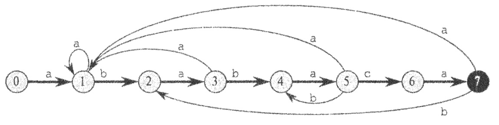
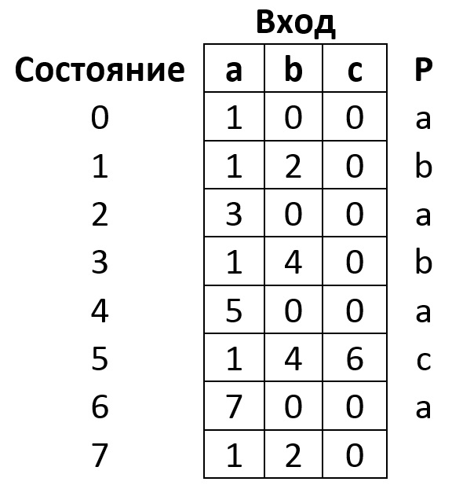

Данный проект рассчитан на пользователей, имеющих хотя бы небольшое представление о том,
что такое конечные автоматы. Поэтому не будем углубляться в разбор их самих,
а сосредоточимся непосредственно на конечных автоматах, применяемых для нашего алгоритма.
Алгоритм поиска подстрок с помощью конечных автоматов начинается, непосредственно,
с построения конечного автомата по имеющемуся образцу (искомой подстроке). Эффективность
и привлекательность этого алгоритма состоит в том, что при последующем анализе исходной
строки каждый её символ обрабатывается один единственный раз, что обеспечивает линейную
сложность непосредственно поиска подстрок. Благодаря этому алгоритм очень эффективен при
больших объёмах входных данных. Однако время построения самого автомата зависит от
используемого алфавита и, при большом его размере, может быть довольно значительным.
Для каждого образца существует свой автомат поиска, так что его необходимо сконструировать
на этапе предварительной обработки, чтобы затем его можно было использовать для поиска
необходимых нам подстрок.
Для построения автомата, соответствующего заданному образцу
P[1..m], для начала
определим вспомогательную суффиксную функцию
D(x), которая является отображением
используемого алфавита на множество
[1..m]. Численно
D равна длине
максимального префикса образца
P, являющегося суффиксом строки
x.
Наиболее наглядно объяснить процесс простоения можно на конкретном примере.
Пример
За образец возьмём строку
ababaca. Используемый алфавит:
[a, b, c].

Рассмотрим данный автомат несколько подробнее.
Переходы вправо, образующие "скелет" автомата, соответствуют переходам при совпадении
символов входной строки с символами строки-образца.
Переходы влево, соответственно, переходам при несовпадении.
Вычисление этих переходов происходит с помощью описанной ранее функции
D(x).
Некоторые из вычислений переходов:
1) Переход из состояния
1 при считывании символа
b.
P=ababaca, D(ab) = 2 (Максимальный префикс строки
P, являющийся суффиксом строки
ab, имеет длину
2) В итоге при считывании символа
b, если автомат
находится в состоянии
1, произойдёт переход автомата в состояние
2, что
соответствует второму слева ребру "скелета" автомата.
2) Переход из состояния
1 при считывании символа
a.
P=ababaca, D(aa) = 1 (Максимальный префикс строки
P, являющийся суффиксом строки
aa, имеет длину
1) В итоге при считывании символа
a, если автомат
находится в состоянии
1, произойдёт переход автомата в то же состояние
1, что
соответствует отображённой на рисунке петле.
3) Переход из состояния
5 при считывании символа
b.
P=ababaca, D(ababab) = 4 (Максимальный префикс строки
P(
ababaca),
являющийся суффиксом строки
ababab (ab
abab), имеет длину
4) В итоге при
считывании символа
b, если автомат находится в состоянии
5, произойдёт переход
автомата в состояние
4, что соответствует рисунку.
Таким образом, вычислив все переходы автомата, мы можем представить его в виде следующей
таблицы переходов:

По общей договорённости, переходы в начальное состояние на рисунке не отображаются.
В итоге, можно записать алгоритм построения автомата в следующем виде:
P - строка-образец
M - таблица переходов автомата
ПОДСТРОКА(str, num) - функция взятия подстроки из строки
str с начала строки по символ с
индексом
num
ПОСТРОИТЬ_АВТОМАТ(Р)
i = 0
ПОКА i < ДЛИНА(T)
j = 0
ПОКА j < РАЗМЕР_АЛФАВИТА
x = ПОДСТРОКА(P, i)
M[i][j] = D(x)
j = j + 1
КЦ
i = i + 1
КЦ
Работа непосредственно самого алгоритма не представляет из себя совершенно ничего сложного
и заключается лишь в считывании очередного символа в поданной на вход строке и переходе
в состояние, соответствующее переходу из текущего состояния автомата для считанного символа.
При переходе автомата в конечное состояние выводится сообщение о том, что искомый образец
был найден начиная с символа с индексом
x.
x = [индекс последнего считанного символа] - [длина строки-образца]
Псевдокод данного алгоритма можно записать в виде:
F(q, simbol) - функция перехода построенного конечного автомата.
q - текущее состояние автомата
m - конечное состояние автомата
simbol - считанный символ
T - подаваемая на вход строка
КОНЕЧНЫЙ_АВТОМАТ_ПОИСКА(T, F, m)
n = ДЛИНА[T]
q = 0
i = 1
ПОКА i < n
q = F(q, T[i])
ЕСЛИ q = m
ВЫВОД("Образец обнаружен на позиции " i - m)
КЦ
По псевдокоду алгоритма легко понять, что алгоритм имеет линейную временную сложность, чем
качественно и отличается от некоторых других алгоритмов поиска в лучшую сторону.